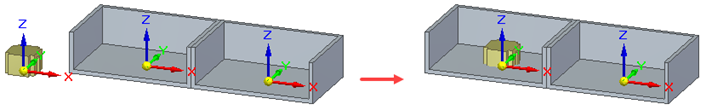

Using the Match Coordinate Systems command bar
The Match Coordinate Systems command bar options are used to define a Match Coordinate Systems relationship between the selected coordinate systems of two parts in an assembly. For more information, see About the Match Coordinate Systems relationship.
The Match Coordinate Systems command bar has the same features as the Assemble command bar when a Match Coordinate Systems relationship type is selected. For more information, see Assemble command bar.
Access the Match Coordinate Systems command bar (Home tab→Assemble group→Match Coordinate Systems) to apply a Match Coordinate Systems relationship between two parts already in the assembly workspace. The Assemble command bar for a Match Coordinate Systems relationship is displayed when a new part is dragged into the assembly workspace from the Parts Library and the Match Coordinate Systems relationship type is selected (for more information, see Position two parts by matching their coordinate systems).
The command bars have the following features:
- Occurrence Properties (This option is only available after you select a part.
-
Select this option to open the Occurrence Properties dialog box. For more information, see the Occurrence Properties command.
- Construction Display (only available when a part is selected)
-
When visible, this option opens the Construction Display dialog box that is used to show or hide the selected reference elements for the part. The visible reference elements (the ones that have been turned on) can then be selected to help visualize the Match Coordinate Systems relationship. The reference items include:
-
show/hide coordinate systems
-
show/hide reference planes
-
show/hide sketches
-
show/hide references axes
-
show/hide construction surfaces
-
show/hide construction curves
-
use designed or simplified part
-
- Relationship List
-
On the Match Coordinate Systems command bar, the identifier for the next relationship to be formed is displayed. This value is for reference only and cannot be changed. On the Assemble command bar, the identifier for the next relationship to be formed is also displayed but any previously defined relationships are displayed in the list and can be selected. This allows previously defined relationships to be modified directly from the Assemble command bar.
- Relationship Type
-
On the Match Coordinate Systems command bar, this option is locked and cannot be changed. On the Assemble command bar, the type of relation to be formed can be selected from the list. Changing the relationship type from Match Coordinate Systems to some other relationship type also changes the options that appear on the command bar.
- Command Bar Options
-
Opens the Assemble command bar Options dialog box.
- Placement Part
-
Specifies which part is to be positioned in the assembly. This option is active when adding a relationship to a part that already exists in the assembly, or when placing a subassembly. This option is inactive when placing a new part in an assembly as the new part that is dragged into the assembly workspace is automatically selected as the placement part.
- Placement Part Element
-
Specifies which coordinate system to use on the part being positioned in the assembly.
- Target Part
-
Specifies the target part to be used to form the relationship.
- Target Part Element
-
Specifies the target coordinate system to be used to form the relationship.
- OK
-
Orients the part in the assembly using the relationship that was just defined.
- Offset Type
-
Selects the offset type to apply:
- Fixed
-
When a fixed offset is defined, the value for the offset distance (the fixed distance between the selected faces) is specified. If the offset value is set to zero, the coordinate planes are coplanar. When this option is selected, enter the offset value or zero into the adjacent Offset Value field. A negative value can be entered. For more information, see Modify the fixed offset value for a relationship. The offset will be based on the selected coordinate plane offset (X-Y offset, Y-Z offset, or X-Z offset) and specified value.
- Single Relationship
-
Creates a single relationship for this match coordinate system. This is useful when editing and redefining the coordinate system. This relationship is supported in family of assemblies, Assembly Relationship Manager, and Relationship Assistant.

- Float
-
When a floating offset is defined, another applied relationship will control the offset distance. This option is selected when a fixed value is not known or is variable and the offset is to be determined by some subsequent relationship. When this option is selected, the offset value field is disabled but the coordinate plane to use for the float must still be specified.
- Range
-
When this option is selected, two offset value boxes are displayed. The first box is for the minimum range value and the next box is for the maximum range value. Movement is limited to the defined range. When this option is selected, the coordinate plane to use for the range of movement must still be specified.